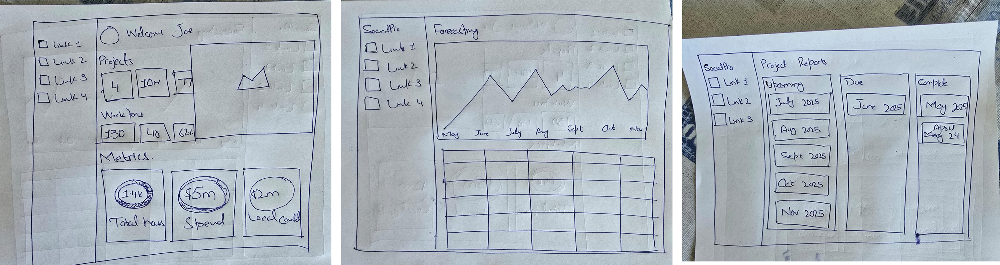
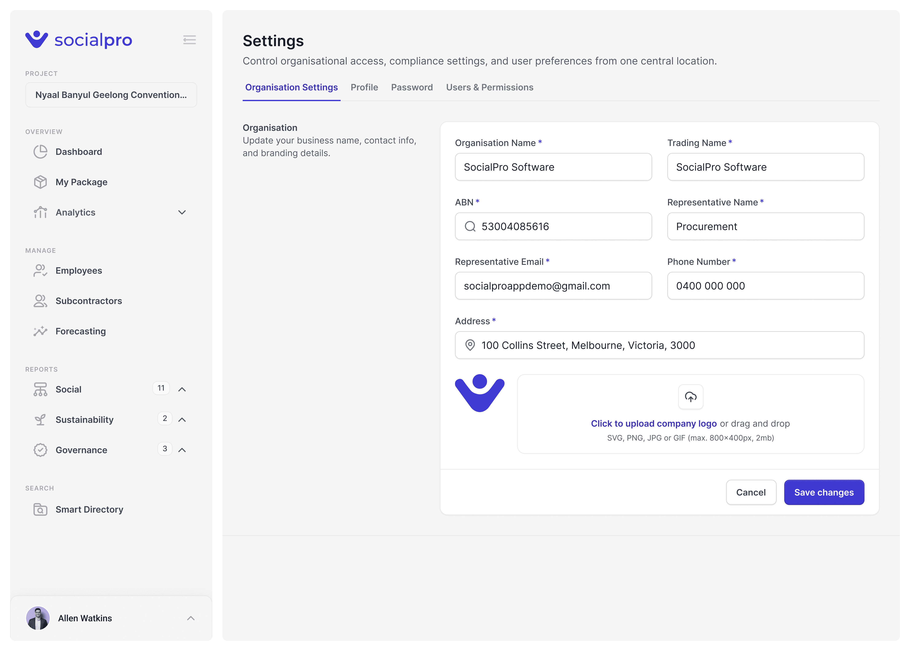
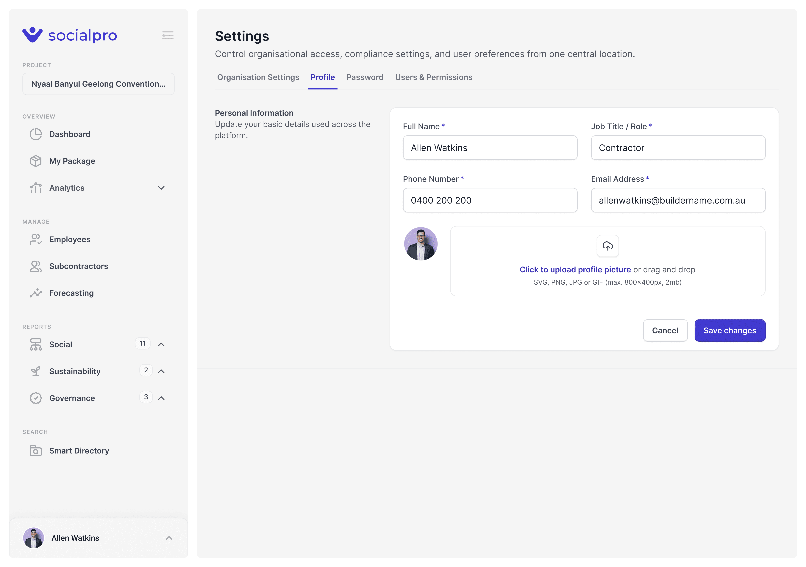
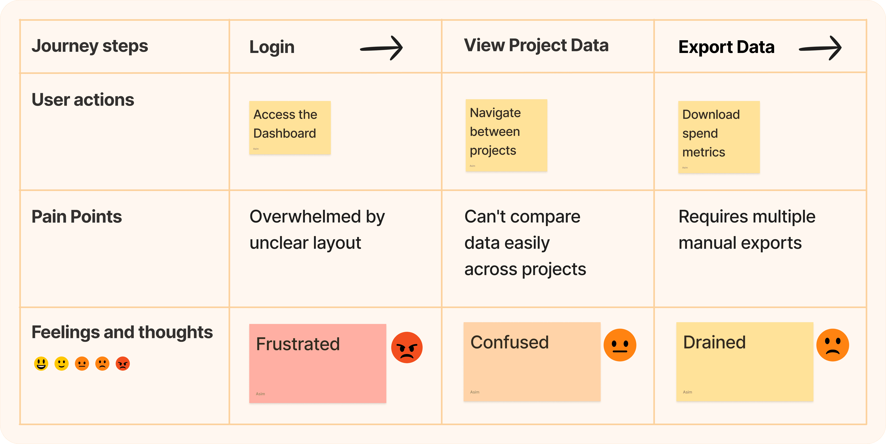
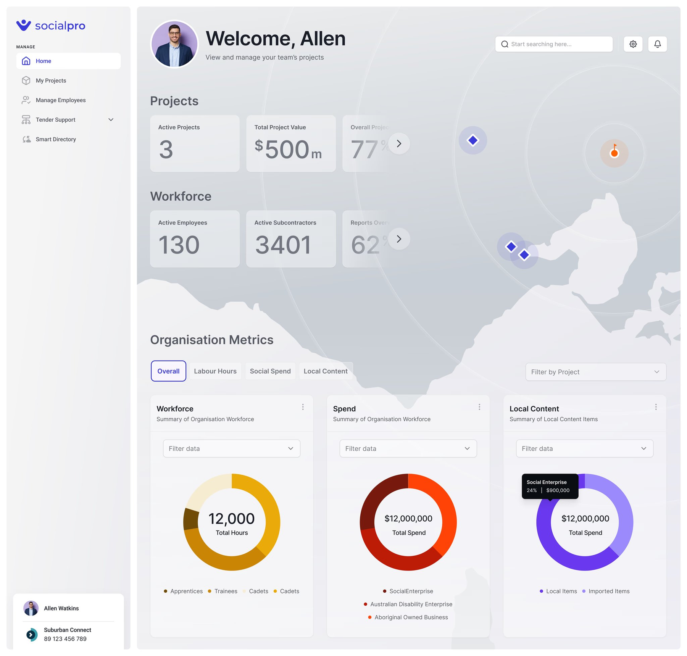
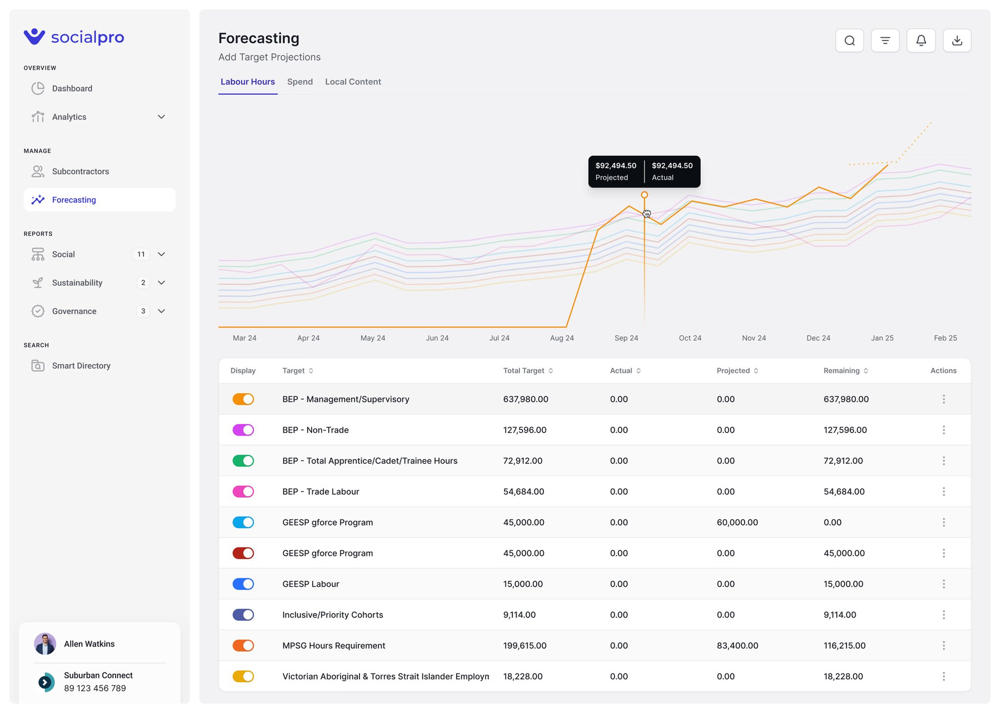
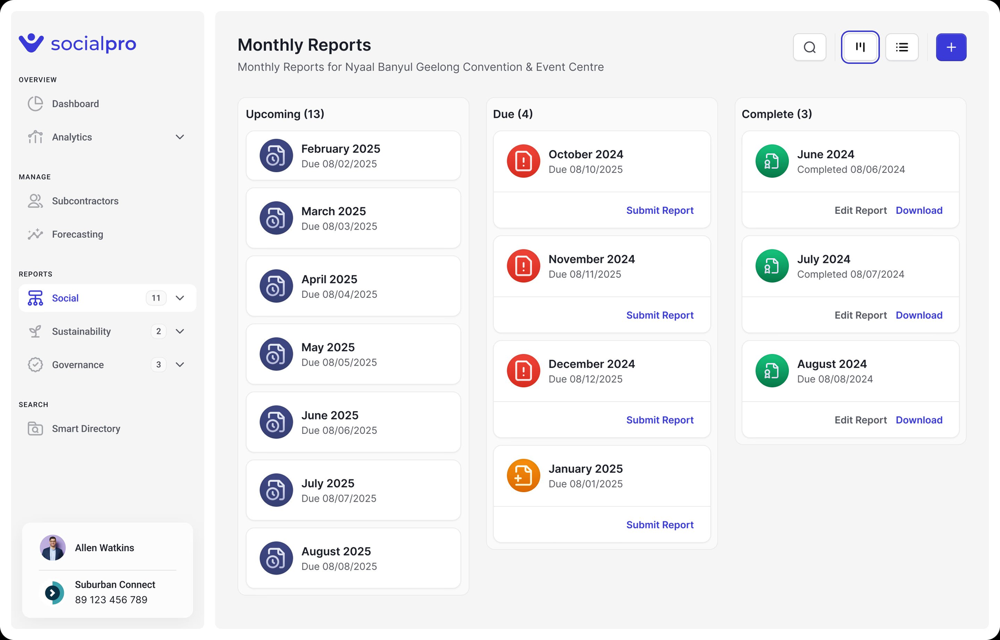
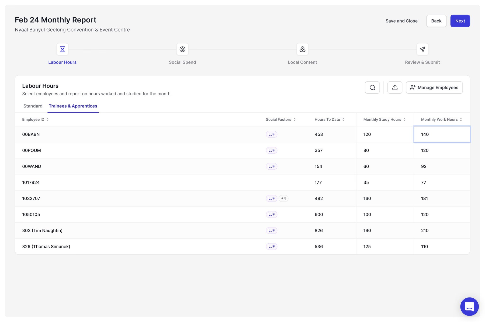
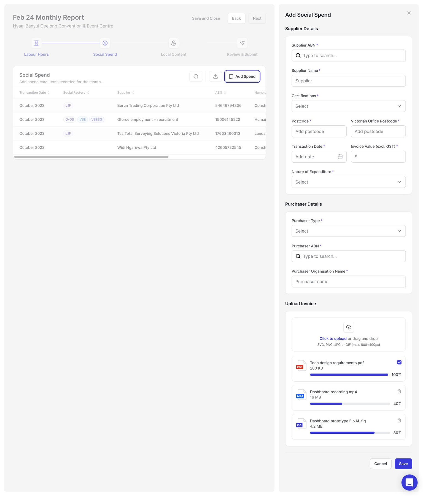
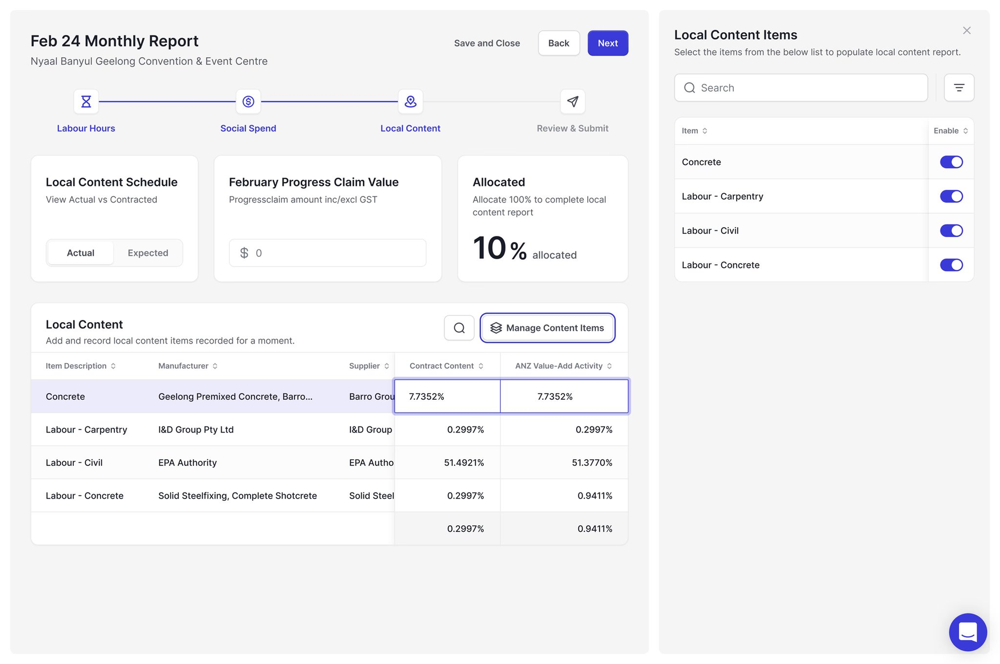

SocialPro is a cloud platform that helps construction companies track social procurement compliance. The reporting tools were cluttered and slow — I redesigned them. Submissions went up 22%.
The Problem
Contractors found reporting cluttered and time-consuming. Subcontractors felt overwhelmed during onboarding. Compliance officers lacked real-time visibility. The friction was costing the platform adoption.
"I spend more time figuring out where to enter data than actually entering it."
— Contractor, user interview
Research
Most contractors don't batch reports monthly — they enter data weekly in small increments. The original form was designed for bulk entry. That mismatch was the root of most frustration.
Process
Hand-drawn sketches and low-fidelity wireframes went to stakeholders weekly — catching usability issues before they got expensive.

Design Solutions
A control center surfacing workforce, spend, and local content metrics at a glance — so contractors stop digging through nested pages for basic numbers.
Now managed through interactive tables inline. No more switching between separate forms. Enter hours, review, submit — all in one flow.
A guided form: search suppliers by ABN, select certifications, enter invoice details, upload documents. Entries appear in a reviewable table with filter, edit, and remove.
A simplified interface for adding and managing local content items. Side panel for quick selection — allocate contract values, assign suppliers, track targets in one place.


Hard Decision
We debated building a bulk upload feature for large contractors. But interviews showed 80% of users enter data weekly, not monthly. So we optimized for frequent small submissions instead of rare large ones. The result: a lighter interface that matched actual behavior.
Mapping the User Journey
Journey maps across all three user groups revealed critical touchpoints — moments of confusion, redundant steps, and dead ends that weren't visible from the interface alone.

Design Highlights
High-fidelity designs built on low-fidelity feedback — balancing visual hierarchy with functionality to keep complex data accessible and actionable.

A comprehensive control center displaying key metrics including workforce, spend, and local content — so contractors stop digging through nested pages for basic numbers.

Enables users to project targets and track metrics like labour hours, spend, and local content in real time. Compliance officers get the visibility they need; contractors can course-correct before deadlines, not after.

I redesigned the Project Reporting module, enabling users to forecast targets and monitor labour hours, spend, and local content metrics in real time — making reporting faster and more transparent.
22% increase in report submissions across the platform
Interactive tables enable direct labour hour management inline — streamlining submission and eliminating the need for separate forms.
A structured, guided form interface that minimises data entry confusion. Users search suppliers via ABN, select certifications, enter invoice details, and upload documents centrally.
Simplified interface for managing local content items. Users allocate contract values, assign suppliers, and monitor target progress in one place. Side panel enables rapid item selection.
Users finalise submissions by reviewing a summary and confirming agreement to terms — a clean handoff that reduces errors and builds audit confidence.

Interactive tables enable direct labour hour management, streamlining submission and eliminating separate form requirements. Enter hours, review, submit — all in one flow.

Structured, guided form interface that minimises data entry confusion. Users search suppliers via ABN, select certifications, enter invoice details, and upload documents centrally. Entries appear in reviewable tables with filter, edit, and remove capabilities.

Simplified interface for managing local content items. Side panel enables rapid item selection — allocate contract values, assign suppliers, and monitor target progress in one place.
Impact
30% decrease in submission time, 22% increase in report submissions, and adoption across 175+ companies managing $10B+ in projects.
"SocialPro has transformed the process, ensuring clarity, efficiency, and seamless collaboration across all our projects. Their intuitive platform streamlines reporting, enabling better decision-making and improved outcomes at every stage."Ana Buljubasic · Contracts Administrator, Stilcon